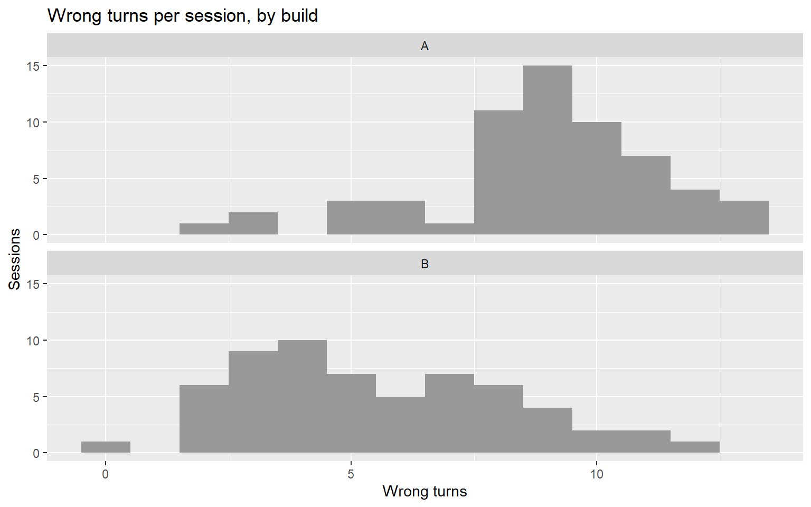
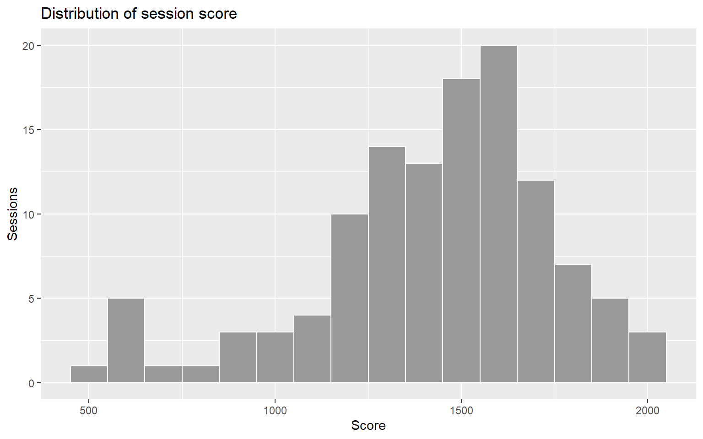
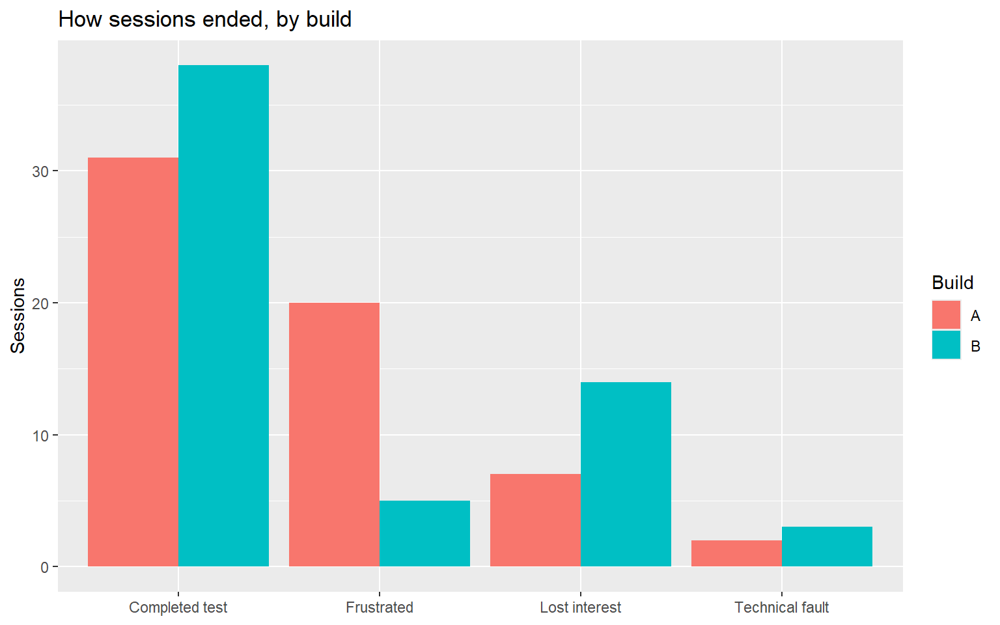
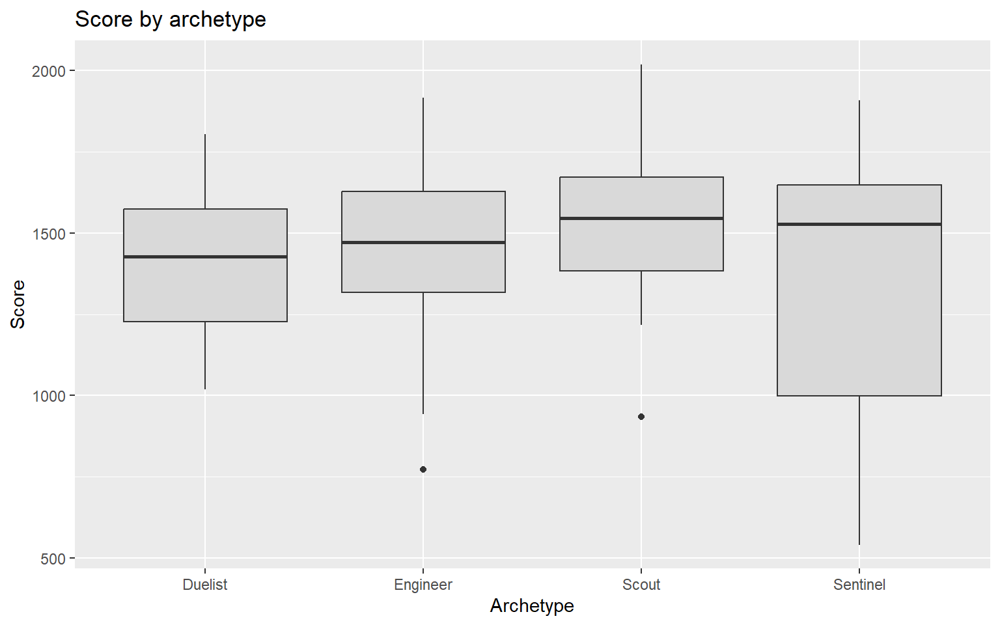
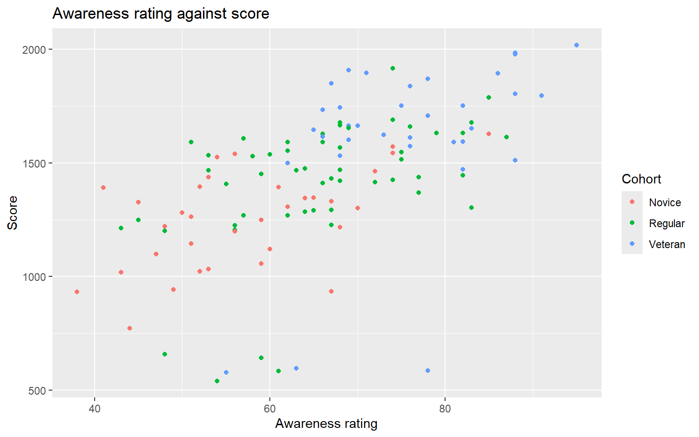
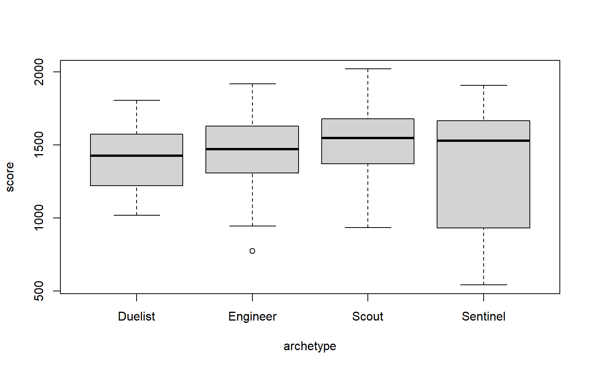
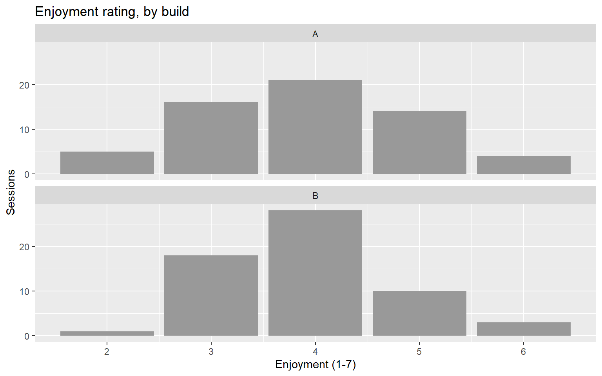
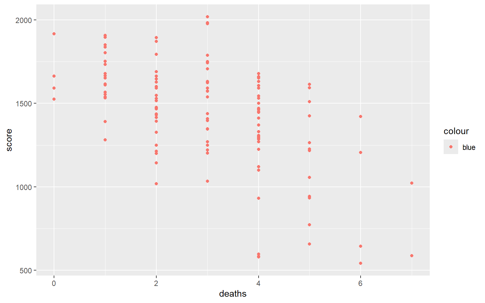
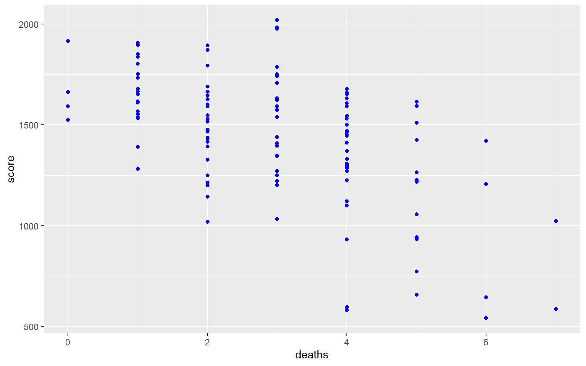
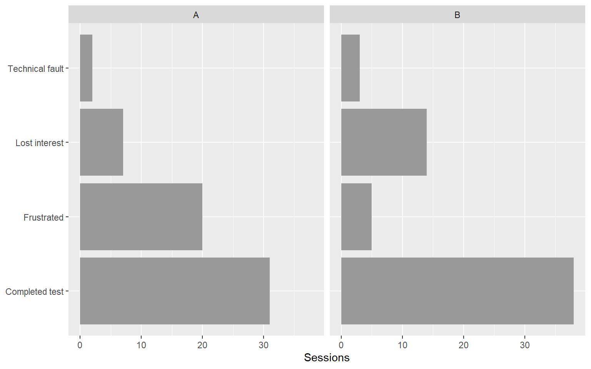

ggplot(sessions, aes(x = wrong_turns)) +
geom_histogram(binwidth = 1)
From a plot you look at to a figure someone else reads
Week 3, first cycle, for everyone, before Part A of Lab 03. It introduces
ggplot2as a system rather than a list of commands: every figure is data, mapped to aesthetics, drawn as a geometry. The worked example is the one to remember: the same wrong-turn counts drawn three ways, and only the third shows what the new signposting did.
These notes and Relationships and Confounding share one 30-minute theory slot, and are written to be taught together. The scatterplot is the correlation visual, so geom_point() and cor() arrive at the same moment rather than twice.
By the end of these notes you can:
ggplot2 figure is built from, and point to each in a line of code;geom_histogram(), geom_bar(), geom_boxplot() and geom_point() from the kind of variable you are drawing;fill, colour and faceting to split a figure by group, and say which comparison each one makes easy;ggplot2 is.A finding leaves your hands as a figure. The producer, the level designer and the person approving the next sprint will not read your console output. They will look at one chart for a few seconds and remember what it seemed to say.
The chart is the claim. If the figure puts the wrong thing side by side, the reader draws the wrong conclusion, however careful the analysis behind it was. Choosing what to compare, and making that comparison the easiest thing on the page to see, is part of the analysis rather than decoration added after it.
The plots in Weeks 1 and 2 were for you. hist() and boxplot() answer a question in one line while you are thinking. They stay useful. What they are not built for is the figure that has to survive being pasted into a report, split by three groups and read by someone who was not in the room.
ggplot2 describes every figure with the same three parts:
data → aesthetic mapping → geometry
The data is a data frame, one row per observation. The aesthetic mapping says which column drives which visual property: position on the x axis, position on the y axis, colour, fill. The geometry is the kind of mark drawn: bars, boxes, points.
ggplot(sessions, aes(x = score)) +
geom_histogram()Read it as: take sessions, put score on the x axis, draw it as a histogram. aes() is where the mapping lives. Each further piece of the figure is added with +, which is why a ggplot2 figure is written as a stack of short lines rather than one long function call.
The grammar is what makes it a system. Swap geom_histogram() for geom_boxplot() and the same mapping draws a different chart. Add fill = build to the mapping and every geometry splits by build in the way that suits it. You learn three ideas once instead of learning every chart type separately.
An aesthetic can be mapped or set, and the difference is where you write it.
| Written | Means | Result | |
|---|---|---|---|
| Mapped | Inside aes(): aes(fill = build) |
Colour depends on the data | One colour per build, and a legend |
| Set | Outside aes(): geom_bar(fill = "grey70") |
Colour is fixed | Every bar the same colour, no legend |
Mapping carries information; setting is styling. If the colour tells the reader something about the data, map it. If it is only there to look tidy, set it. The most common ggplot2 bug is putting a fixed colour inside aes(), covered in Common Mistakes below.
The geometry follows from the kind of variable you are drawing (rule 3), exactly as in Week 1.
| You want to show | Variables | Geometry | Week 1 equivalent |
|---|---|---|---|
| The shape of one numeric variable | One numeric on x | geom_histogram() |
hist() |
| Counts of a categorical variable | One categorical on x | geom_bar() |
barplot(table()) |
| A numeric variable compared across groups | Categorical on x, numeric on y | geom_boxplot() |
boxplot(y ~ x) |
| Two numeric variables together | Numeric on x and y | geom_point() |
plot(x, y) |
geom_bar() counts for you. Give it the raw column and it tallies the categories itself. The Week 1 habit of wrapping the column in table() first is not needed here.
Most playtest questions compare groups: two builds, three cohorts, four archetypes. ggplot2 gives you three ways to split a figure, and each makes a different comparison easy.
fill colours the inside of areas: bars, boxes, histogram bins. colour colours lines and points, and the outline of areas. Map a group to fill for bars and boxes, and to colour for points.
Faceting draws one small panel per group, all on the same axes:
+ facet_wrap(~ build)Read ~ build as “split by build”. Panels that share an axis let the eye compare position directly, which is what makes faceting the strongest of the three when the question is how do these distributions differ? (rule 7).
Colour compares within a panel; facets compare between panels. Two groups overlaid in one panel invite a comparison at each x value. Two groups faceted invite a comparison of whole shapes. Decide which question the reader is meant to answer, then pick the split that answers it.
Both are correct tools, and neither replaces the other.
| Base R | ggplot2 |
|
|---|---|---|
| Built for | Quick inspection while you think | A figure somebody else will read |
| Speed to a first picture | One line | Two or three lines |
| Splitting by group | Awkward beyond y ~ group |
One more line: fill, colour or a facet |
| Legends and labels | Added by hand | Generated from the mapping |
| Changing the chart type | Rewrite the call | Swap the geometry |
Use base R to find the finding and ggplot2 to show it. In practice you will run hist(sessions$wrong_turns) a dozen times while exploring and build one ggplot2 figure for the report. That is the right division of labour, not a failure to commit to one tool.
That is why Weeks 1 and 2 used base R and this week does not. For two weeks you were inspecting: describing a variable, checking a clean, looking at two builds before testing them. Every plot had one reader, you, and one line was all it needed to earn. This week the reader changes. The report at the end of Lab 03 is for someone who was not in the room, and building that figure is the job ggplot2 is designed for. Base R has not been replaced: you will still reach for hist() first.
Did the new signposting reduce wrong turns? Build B added lighting and signage to guide players through the level. Both builds logged how many wrong turns each tester took, 120 sessions in all. The question is a comparison of two distributions, and the three drafts below draw the same data three ways.
Draft 1: everything at once.
ggplot(sessions, aes(x = wrong_turns)) +
geom_histogram(binwidth = 1)
This is a correct histogram of the wrong question. It pools both builds, so it describes the playtest as a whole and says nothing about whether Build B helped. binwidth = 1 gives one bar per whole number of wrong turns, which suits a count.
Draft 2: fill by build.
ggplot(sessions, aes(x = wrong_turns, fill = build)) +
geom_histogram(binwidth = 1)
Mapping fill = build splits the bars and adds a legend without being asked. But geom_histogram() stacks groups by default: Build A’s bars sit on top of Build B’s, so Build A’s bars start at a different height in every column. You can read Build B’s shape. You cannot read Build A’s, and you cannot compare the two.
Draft 3: facet by build.
ggplot(sessions, aes(x = wrong_turns)) +
geom_histogram(binwidth = 1, fill = "grey60") +
facet_wrap(~ build, ncol = 1) +
labs(title = "Wrong turns per session, by build",
x = "Wrong turns", y = "Sessions")
One panel per build, stacked vertically so the x axes line up. Now the comparison is immediate. Build A’s sessions bunch between 8 and 10 wrong turns, around a median of 9. Build B’s centre has moved left to a median of 5.
The picture shows a second thing that the medians do not. Build B is wider, not just further left: its interquartile range is 4.25 wrong turns against Build A’s 2, and its worst session took 12. The signposting helped most players a lot and some players hardly at all. That is a different finding from “Build B reduced wrong turns”, and it points at a different next step: find out who the signposting did not reach.
Note that fill = "grey60" is set, outside aes(). The panels already say which build is which, so colour would repeat information the reader has. That is the kind of decision that separates a figure from a plot.
Each demonstration rebuilds a Week 1 base R plot in ggplot2, so you can see what changes and what does not.
library(readr)
library(ggplot2)
sessions <- read_csv("data/tidebreak_sessions.csv", show_col_types = FALSE)ggplot(sessions, aes(x = score)) +
geom_histogram(binwidth = 100, fill = "grey60", colour = "white") +
labs(title = "Distribution of session score", x = "Score", y = "Sessions")
geom_histogram() is hist(). Set binwidth in the units of the variable rather than guessing a number of bins; the shape you see depends on it (rule 4). colour = "white" outlines each bar so neighbouring bars stay distinct.
ggplot(sessions, aes(x = quit_reason, fill = build)) +
geom_bar(position = "dodge") +
labs(title = "How sessions ended, by build",
x = NULL, y = "Sessions", fill = "Build")
geom_bar() counts each quit reason itself. position = "dodge" puts the builds side by side instead of stacking them, for the reason Draft 2 showed. The Frustrated pair is the one to look at: 20 sessions in Build A against 5 in Build B. x = NULL removes an axis label that would only repeat the category names.
ggplot(sessions, aes(x = archetype, y = score)) +
geom_boxplot(fill = "grey85") +
labs(title = "Score by archetype", x = "Archetype", y = "Score")
geom_boxplot() is boxplot(score ~ archetype) with the formula replaced by the mapping: group on x, numeric on y. The Sentinel’s box is the tall one, with an IQR of 647 points against at most 346 for the other three archetypes.
ggplot(sessions, aes(x = awareness, y = score, colour = cohort)) +
geom_point() +
labs(title = "Awareness rating against score",
x = "Awareness rating", y = "Score", colour = "Cohort")
geom_point() is plot(x, y). Mapping colour = cohort adds a third variable without a second chart. The cloud rises from left to right: players rated higher for awareness tend to score more. How strong that relationship is, and whether awareness is the cause, is the subject of Relationships and Confounding, which starts from this scatterplot.
ggplot(sessions, aes(x = session_minutes)) +
geom_histogram(binwidth = 1, fill = "grey60", colour = "white") +
facet_wrap(~ build, ncol = 1) +
labs(title = "Session length, by build",
x = "Minutes played", y = "Sessions")
facet_wrap(~ build) is the line base R has no short equivalent for. Build A has a cluster of sessions that end between minutes 11 and 13: 11 of them, against 4 in Build B. A single histogram of both builds would have blurred that cluster into the overall spread.
boxplot(score ~ archetype, data = sessions)
For comparison, the base R version of the boxplot above. One line, no styling, and entirely adequate for checking a hunch. Keep it for that.
What the data shows. In this playtest, Build B’s median was 5 wrong turns per session against Build A’s 9. Build B’s sessions were also more spread out, and its worst session took 12 wrong turns.
What the analysis suggests. The signposting guided most players but not all of them. The long right-hand tail of Build B’s panel is a group worth identifying: a cohort, an archetype or a route that the new lighting does not reach.
What can legitimately be concluded. The testers who played Build B took fewer wrong turns than the testers who played Build A. A figure cannot tell you whether another group of players would show the same gap, or whether a gap this size could arise by chance. That is what the t-test in Comparing Playtest Conditions answers, and it is why the figure comes before the test rather than instead of it.
Every figure answers one question. Before you draw, write the question the reader is meant to answer in one sentence. Then check the finished figure makes that comparison the easiest thing on the page to see. If it does not, change the split, not the colours.
Label for the reader, not for R. wrong_turns is a column name. “Wrong turns” is an axis label. A title that states the subject (“Wrong turns per session, by build”) lets the figure be understood when it is lifted out of your report and pasted somewhere else, which it will be.
Putting a fixed colour inside aes(). geom_point(aes(colour = "blue")) does not draw blue points. It maps a column containing the word “blue” to colour, so the points come out in ggplot2’s first default colour, with a legend reading “blue”. Fixed colours go outside aes().
Stacking what should be compared. A stacked histogram or bar chart shows totals well and the groups badly, because only the bottom group starts at zero. Dodge the bars or facet the panels.
Mapping a number where a category was meant. A column of 1s and 2s mapped to colour draws a continuous gradient, not two colours. Check the type with glimpse() first (rule 3).
Freeing the facet scales without saying so. facet_wrap(~ build, scales = "free") gives each panel its own axis range. Two panels can then look alike when their values are very different. Keep the axes shared unless you have a reason and say so on the figure.
Colour for its own sake. Every mapped colour is a claim that the grouping matters. Four colours for four archetypes on a chart about builds is noise the reader has to decode and ignore.
Default labels in a report. session_minutes on an axis tells the reader the figure was never meant for them. Two lines of labs() fix it.
Each takes two or three minutes.
1. Did the signposting make Build B less enjoyable? Draw the distribution of enjoyment, a 1–7 rating, for each build. Which geometry fits a 1–7 rating, and why?
ggplot(sessions, aes(x = enjoyment)) +
geom_bar(fill = "grey60") +
facet_wrap(~ build, ncol = 1) +
labs(title = "Enjoyment rating, by build", x = "Enjoyment (1-7)", y = "Sessions")
geom_bar(), because a 1–7 rating has only seven possible values: it is ordinal, and a bar per value shows exactly how many players chose it. Both panels peak at the same rating, 4 in Build A and 4 in Build B. Mean enjoyment was 3.9 in Build A and 3.9 in Build B: fewer wrong turns, and no visible cost to enjoyment.
2. This code is meant to draw blue points. What does it draw instead, and how do you fix it?
ggplot(sessions, aes(x = deaths, y = score)) +
geom_point(aes(colour = "blue"))ggplot(sessions, aes(x = deaths, y = score)) +
geom_point(aes(colour = "blue"))
The points come out salmon, ggplot2’s first default colour, with a legend reading “blue”, because colour = "blue" inside aes() is a mapping. Move it outside:
ggplot(sessions, aes(x = deaths, y = score)) +
geom_point(colour = "blue")
3. Draw the quit reasons by build twice: once with fill = build and position = "dodge", once with facet_wrap(~ build). Which version makes it easier to see how Build A’s players left, and which makes it easier to compare the builds on one reason?
ggplot(sessions, aes(y = quit_reason)) +
geom_bar(fill = "grey60") +
facet_wrap(~ build) +
labs(x = "Sessions", y = NULL)
The faceted version shows each build’s full profile of quit reasons, so it answers “how did Build A’s players leave?”. The dodged version in the R Demonstrations puts the two Frustrated bars next to each other, so it answers “which build frustrated more players?”. Mapping quit_reason to y instead of x turns the bars sideways so the long labels fit. Neither version is wrong; they answer different questions.
ggplot2 figure is data, mapped to aesthetics with aes(), drawn as a geometry. Pieces are added with +.aes()) makes a property depend on the data. Setting (outside) fixes it.fill, colour or facets, and pick the one that makes the intended comparison easiest to see. Avoid stacking groups you mean to compare.ggplot2 is for showing it. Label every figure for a reader who was not in the room.hist() or ggplot(), and what would change your answer?